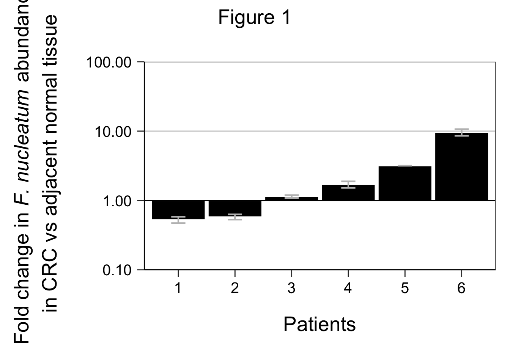

Reproducible Research
Open peer review
Introduction
The COVID-19 pandemic has underscored the critical role of open science and reproducible research. Open science facilitates the free exchange of findings, while reproducible research ensures that publications are both accessible and verifiable, thereby enhancing transparency and trust in scientific conclusions. Together, these practices drive scientific progress forward [1]. The transparency criteria of Reproducibility and reporting practices in COVID-19 preprint manuscripts was used to examine the reproducibility of an published article. I’ll peer review Applying Cell Painting in Non-Tumorigenic Breast Cells to Understand Impacts of Common Chemical Exposures from bioRxiv using the transparency criteria shown in table 2.
Article overview
Researchers used Cell Painting to study the effects of various chemicals on mammary cells to understand their potential links to breast cancer. They examined 16 chemicals and 21 small molecules, analysing over 3000 cellular features. By comparing their findings with human exposure data, they identified similarities between certain chemicals and known pathways. Notably, a pesticide metabolite showed similarities to a Wnt pathway activator, suggesting a potential mechanism for breast cancer risk. This study highlights Cell Painting’s utility in understanding the effects of common environmental toxins on breast cancer[2].
Peer review
Table 2. The Ripeta team analyzed eight reproducibility criteria [1].
| Transparency Criteria | Definition | REsponse Type | Score |
|---|---|---|---|
| Study Purpose | A concise statement in the introduction of the article, often in the last paragraph, that establishes the reason the research was conducted. Also called the study objective. | Binary | yes |
| Data Availability Statement | A statement, in an individual section offset from the main body of text, that explains how or if one can access a study’s data. The title of the section may vary, but it must explicitly mention data; it is therefore distinct from a supplementary materials section. | Binary | yes |
| Data Location | Where the article’s data can be accessed, either raw or processed. | Found Value | yes; all in paper or supplementary fils |
| Study Location | Author has stated in the methods section where the study took place or the data’s country/region of origin. | Binary; Found Value | no |
| Author Review | The professionalism of the contact information that the author has provided in the manuscript. | Tier 3 | |
| Ethics Statement | A statement within the manuscript indicating any ethical concerns, including the presence of sensitive data. | Binary | no |
| Funding Statement | A statement within the manuscript indicating whether or not the authors received funding for their research. | Binary | yes |
| Code Availability | Authors have shared access to the most updated code that they used in their study, including code used for analysis. | Binary | no |
Conclusion
This article meets most criteria at a sufficient level. However, it falls short in a couple of key areas. Firstly, it does not specify the study locations in the methods section. Secondly, there is no code available for the analysis, hindering the replicability of the results. These shortcomings could impact the article’s reception in open peer review processes, highlighting areas for improvement in transparency and reproducibility. Furthermore, there was no ethics statement mentioned. This may not be relevant in this study, but it should be included in the ethical statement section. With these shortcomes, the article does not pass the open peer review.
Reproducible analysis
From this blog, I chose a open source paper using the OSF website to reproduce a peace of code that is used in the study. From this paper, I have reproduced a piece of code. The associated code and datasets can be found here.
The codes in this RMarkdown were used to create the figures presented in this paper. On a scale from 1 (very poor) to 5 (very good), I rate the readability of the codes in this file a 4. Below, I reproduce a portion of the data to recreate figure 1 from the paper. It was easily to reproduce this figure, with a difficulty rating of 5 on a scale from 1 (very difficult) to 5 (very easy). I had to make a few minor adjustments to create the figure due to the updated version of ggplot. Further, the figure that was generated with this code is identical to the one in the paper.
# Replication Study 50
# Figure 1
# Relative abundance of Fusobacterium in CRC vs adjacent normal (combined independent replicates)
# Samples with detectable Fusobacterium in CRC and adjacent normal
# R Version 3.4.2
# Required Packages
library(httr) # version 1.2.1
library(rjson) #version 0.2.15
library(plotrix) # version 3.6-6
library(ggplot2) # version 2.2.1
library(cowplot) #version 0.8.0
#source("~/credentials.R") #for private use during r script generation
#Downloads R script "download.OSF.file.R"
GET("https://osf.io/hkpjb/?action=download", write_disk("download.OSF.file.R", overwrite = TRUE))## Response [https://files.osf.io/v1/resources/p7ayb/providers/osfstorage/59a5b71f9ad5a10255d6f93e?action=download&direct&version=7]
## Date: 2024-05-26 13:15
## Status: 200
## Content-Type: application/octet-stream
## Size: 3.58 kB
## <ON DISK> download.OSF.file.Rsource("download.OSF.file.R")
#calls the download.OSF.file
#Downloads data file 'Study_50_combined_qPCR_statistical_analysis.R' from https://osf.io/8vcea/
download.OSF.file(GUID="8vcea",Access_Token=RPCB_private_access,file_name="Study_50_combined_qPCR_statistical_analysis.R")## [1] "The file has been downloaded to your working directory as: Study_50_combined_qPCR_statistical_analysis.R"## [1] "The file has been downloaded to your working directory as: Study_50_ddCT_3.17.16.R"
## [1] "The file has been downloaded to your working directory as: Study_50_Ct_Values_3.17.16.csv"
## [1] "The file has been downloaded to your working directory as: Study_50_ddCT_4.25.16.R"
## [1] "The file has been downloaded to your working directory as: Study_50_Ct_Values_4.25.16.csv"# make data.frame of the combined data
log_all_total <- data.frame(log_all_3.17$FoldChange, log_all_4.25$FoldChange, log_all_3.17$ID)
colnames(log_all_total) <- c("FoldChange_3.17", "FoldChange_4.25", "ID")
# calculate average fold change, sd, and se
avg <- NULL
stdev<- NULL
sder <- NULL
for (i in 1:40) {
avg[i] <- (log_all_total[i,1]+log_all_total[i,2])/2
stdev[i] <- sd(c(log_all_total[i,1],log_all_total[i,2]))
sder[i] <- std.error(c(log_all_total[i,1],log_all_total[i,2]))
}
# assign column names
log_all_total$meanFoldChange <- avg
log_all_total$sd <- stdev
log_all_total$se <- sder
# subset on samples with detectable F. nucleatum in both CRC and adjacent normal tissues (Ct below 35)
exp_plot <- log_all_total[which(log_all_total$ID %in%
intersect(gsub("-.*","",adjnorm_Ct_35),gsub("-.*","",tumor_Ct_35))),]
# Draw plot for fold gene expression change (2-ddCt)
# Figure 1
Figure1 <- ggplot(exp_plot, aes(x = reorder(ID,meanFoldChange), y = meanFoldChange)) +
geom_bar(stat = "identity", colour = "white", fill = "black", width=0.95) +
geom_errorbar(position=position_dodge(.9), width=.25, size = 0.75, aes(ymin=meanFoldChange-se, ymax=meanFoldChange+se), color = "grey") +
scale_y_continuous(trans = "log10",
breaks = c(0.1,1,10,100),
labels = c("0.10","1.00","10.00","100.00"),
limits = c(0.1,100),
expand = c(0,0)) +
xlab("Patients") +
ylab(~ atop(paste("Fold change in ", italic("F. nucleatum"), " abundance"),
paste("in CRC vs adjacent normal tissue"))) +
scale_x_discrete(labels = c("1","2","3","4","5","6")) +
geom_hline(yintercept=1) +
theme_bw() +
theme(panel.background = element_blank(),
panel.grid.major.x = element_blank(),
panel.grid.minor = element_blank(),
panel.grid.major.y = element_line(linewidth =0.5, color="grey80"),
axis.line.x = element_line(),
axis.line.y = element_line(),
axis.text.x = element_text(size=15, margin=margin(5,0,0,0), color = "black"),
axis.text.y = element_text(size=15, margin=margin(0,5,0,0), color = "black"),
axis.title.x = element_text(size=20,margin=margin(20,0,0,0)),
axis.title.y = element_text(size=20,angle=90,margin=margin(0,20,0,0)),
axis.ticks.length = unit(0.25, "cm"),
plot.margin = unit(c(1,.5,1,.5),"cm"))
title <- ggdraw() + draw_label("Figure 1", size=20)
Figure1 <- plot_grid(title,Figure1, ncol = 1,rel_heights = c(0.1,1))
Figure1